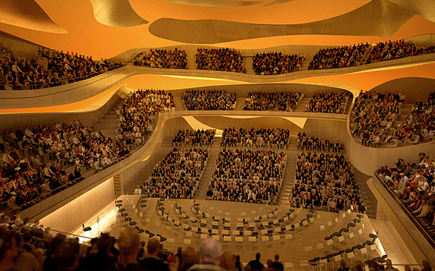

| Stanford Performing Arts | Autumn 2012 Edition |
|---|---|
| Big Concert Hall | Calender |
|

The Bing concert hall at brstanford will play vital role on campus and in the local community . the hall's exceptional acoustics and state-of-the-art technical capapblities will showcase the world's finest performers The hall is sceduled to open early in 2013.Theconcert hall will have 844 seats in an intimate vineyrad-style configyration, with terraced sections wrapping all the way around the stage. |
Harmony for humanity:daniel pearl world music concert Sundays with the st.lawerence stringQuartert merce cunningham dance company huilliard string quartet |